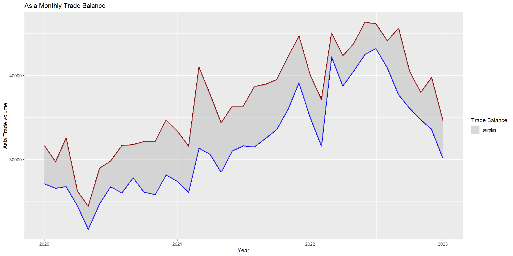
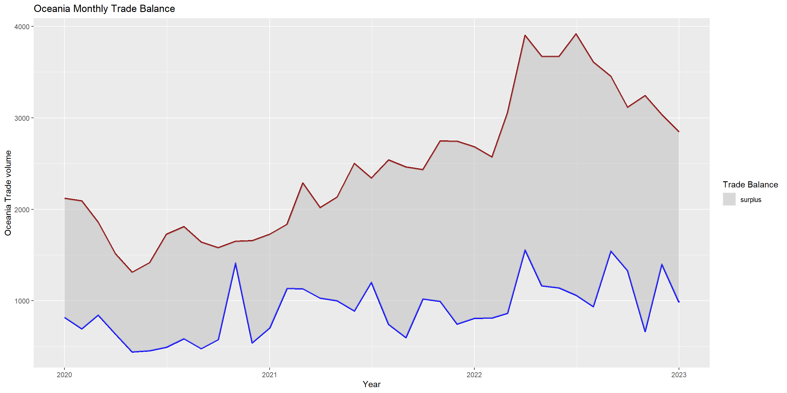
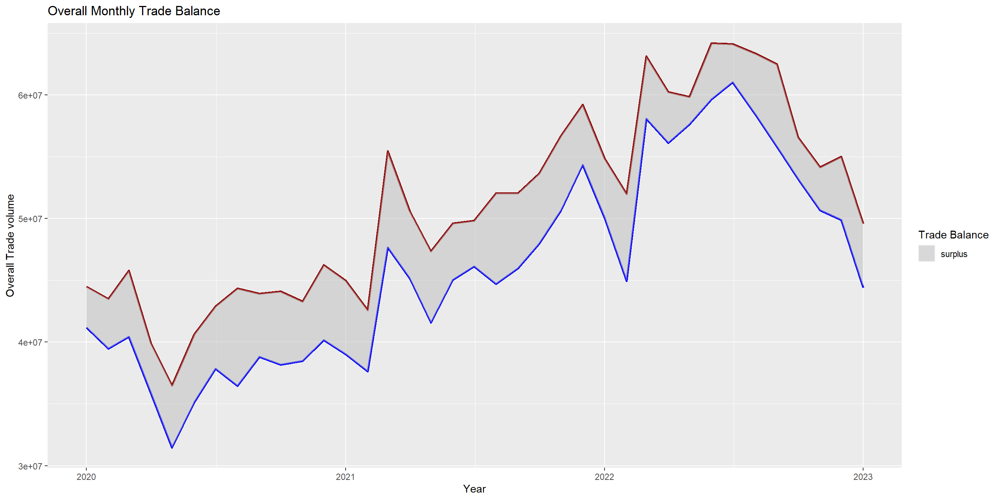

pacman::p_load(readxl)
pacman::p_load(readr)
pacman::p_load(ggstatsplot)
pacman::p_load(ggbraid)
pacman::p_load(gganimate)
pacman::p_load(transformr , gifski)
pacman::p_load(tidyverse)Take Home Exercise 04
The Task
In this take-home exercise, we need to uncover the impact of COVID-19 as well as the global economic and political dynamic in 2022 on Singapore bi-lateral trade (i.e. Import, Export and Trade Balance) by using appropriate analytical visualisation techniques learned in Lesson 6: It’s About Time.
The Data
For the purpose of this take-home exercise, Merchandise Trade provided by Department of Statistics, Singapore (DOS) will be used. The data are available under the sub-section of Merchandise Trade by Region/Market. The study period should be between January 2020 to December 2022.
I) IMPORT VERSUS EXPORT
We want to do a comparison between Singapore Import and Export, first let’s import the data.
monthlyexport_overall <- read_excel("C:/thomashoanghuy/ISSS608-VAA/TakehomeEx/data3/outputFile.xlsx", sheet = "T1")
monthlyimport_overall <- read_excel("C:/thomashoanghuy/ISSS608-VAA/TakehomeEx/data3/outputFile.xlsx", sheet = "T8")Please note all these figures are in Singapore dollar currency.
Sheet T1 = Merchandise Exports By Commodity Division, Monthly snippet
Sheet T2 = Merchandise Imports By Commodity Division, Monthly snippet
As you can see from above 2 snippets of the data table, most of the sub categories are similar between export and import data. However the highlight rows are the difference between the 2 sets of data. We should remove them before we can start any comparisons.
monthlyexport_overall <- monthlyexport_overall[!grepl("Oil Bunkers", monthlyexport_overall$`Data Series`),]monthlyimport_overall <- monthlyimport_overall[!grepl("Meat & Meat Preparations", monthlyimport_overall$`Data Series`),]
monthlyimport_overall <- monthlyimport_overall[!grepl("Footwear", monthlyimport_overall$`Data Series`),]Now both tables would have the same sub categories of merchandises for comparison.
Now. we can extract the total Export Merchandise Import and Export and we can combine them into a separate dataframe
monthlyexport_total <- monthlyexport_overall[grepl("Total Merchandise Exports", monthlyexport_overall$`Data Series`),]monthlyimport_total <- monthlyimport_overall[grepl("Total Merchandise Imports", monthlyimport_overall$`Data Series`),]monthly_tradebalance1 = rbind(monthlyexport_total , monthlyimport_total)
monthly_tradebalance1= as.data.frame(t(monthly_tradebalance1))
colnames(monthly_tradebalance1) <- monthly_tradebalance1[1,]
monthly_tradebalance1 <- monthly_tradebalance1[-1,]
head(monthly_tradebalance1) Total Merchandise Exports Total Merchandise Imports
2022 Dec 55000084 49869770
2022 Nov 54162780 50653907
2022 Oct 56576348 53182943
2022 Sep 62507132 55799312
2022 Aug 63363749 58466009
2022 Jul 64124991 61029374monthly_tradebalance <- monthly_tradebalance1 %>%
rownames_to_column(var = "Month-Year")tail(monthly_tradebalance) Month-Year Total Merchandise Exports Total Merchandise Imports
31 2020 Jun 40640766 35120892
32 2020 May 36482259 31458238
33 2020 Apr 39946596 35878828
34 2020 Mar 45800019 40433029
35 2020 Feb 43512320 39472637
36 2020 Jan 44501656 41180224Reverse sort the data frame “monthly_tradebalance”
monthly_tradebalance <- monthly_tradebalance[nrow(monthly_tradebalance):1, ]
rownames(monthly_tradebalance) <- rownames(monthly_tradebalance[nrow(monthly_tradebalance):1, ])
head(monthly_tradebalance) Month-Year Total Merchandise Exports Total Merchandise Imports
1 2020 Jan 44501656 41180224
2 2020 Feb 43512320 39472637
3 2020 Mar 45800019 40433029
4 2020 Apr 39946596 35878828
5 2020 May 36482259 31458238
6 2020 Jun 40640766 35120892Convert Month-Year into time format (continuous time series)
monthly_tradebalance$`Month-Year` <- as.Date(paste0(monthly_tradebalance$`Month-Year`, " 01"), format = "%Y %b %d")monthly_tradebalance Month-Year Total Merchandise Exports Total Merchandise Imports
1 2020-01-01 44501656 41180224
2 2020-02-01 43512320 39472637
3 2020-03-01 45800019 40433029
4 2020-04-01 39946596 35878828
5 2020-05-01 36482259 31458238
6 2020-06-01 40640766 35120892
7 2020-07-01 42892684 37843646
8 2020-08-01 44333640 36472279
9 2020-09-01 43907435 38801413
10 2020-10-01 44088350 38173829
11 2020-11-01 43291938 38477878
12 2020-12-01 46246876 40154550
13 2021-01-01 44988833 39028616
14 2021-02-01 42602227 37643664
15 2021-03-01 55444082 47668437
16 2021-04-01 50591895 45169547
17 2021-05-01 47355225 41559697
18 2021-06-01 49618994 45039845
19 2021-07-01 49834010 46107788
20 2021-08-01 52038522 44714491
21 2021-09-01 52034038 45980374
22 2021-10-01 53639342 47945213
23 2021-11-01 56720130 50674908
24 2021-12-01 59213794 54349357
25 2022-01-01 54845697 50026788
26 2022-02-01 51991457 44958373
27 2022-03-01 63132579 58079982
28 2022-04-01 60237343 56116002
29 2022-05-01 59847424 57604263
30 2022-06-01 64177050 59649162
31 2022-07-01 64124991 61029374
32 2022-08-01 63363749 58466009
33 2022-09-01 62507132 55799312
34 2022-10-01 56576348 53182943
35 2022-11-01 54162780 50653907
36 2022-12-01 55000084 49869770Convert trade volumes numbers from string to numeric values.
monthly_tradebalance$`Total Merchandise Exports` <- as.numeric(monthly_tradebalance$`Total Merchandise Exports`)
monthly_tradebalance$`Total Merchandise Imports` <- as.numeric(monthly_tradebalance$`Total Merchandise Imports`)monthly_tradebalanceMelt <- reshape2::melt(monthly_tradebalance, id.var='Month-Year')p1 = ggplot(monthly_tradebalanceMelt, aes(x=monthly_tradebalanceMelt$`Month-Year` , y=value, col=variable, group = 1)) +
geom_point() + geom_line(aes(group=factor(variable))) +
xlab("Year") + ylab("Trade Volume in Billions")
p1
As evidenced by the above chart, Singapore import and export move quite in tandem with each other. Between 2020-2023, it shows an uptrend. As Export volume increase, so does Import. However Singapore overall Export are more than its Import, consistently since post-covid 2020, Singapore is sill a country with a positive trade surplus overall.
While positive trade surplus are confirmed, we should examine how Singapore trade surplus is trending post-covid, let’s create a data table of the difference between Export and Import ( the trade surplus)
monthly_tradebalance$Trade_surplus = monthly_tradebalance$`Total Merchandise Exports` - monthly_tradebalance$`Total Merchandise Imports`monthly_tradebalance Month-Year Total Merchandise Exports Total Merchandise Imports Trade_surplus
1 2020-01-01 44501656 41180224 3321432
2 2020-02-01 43512320 39472637 4039683
3 2020-03-01 45800019 40433029 5366990
4 2020-04-01 39946596 35878828 4067768
5 2020-05-01 36482259 31458238 5024021
6 2020-06-01 40640766 35120892 5519874
7 2020-07-01 42892684 37843646 5049038
8 2020-08-01 44333640 36472279 7861361
9 2020-09-01 43907435 38801413 5106022
10 2020-10-01 44088350 38173829 5914521
11 2020-11-01 43291938 38477878 4814060
12 2020-12-01 46246876 40154550 6092326
13 2021-01-01 44988833 39028616 5960217
14 2021-02-01 42602227 37643664 4958563
15 2021-03-01 55444082 47668437 7775645
16 2021-04-01 50591895 45169547 5422348
17 2021-05-01 47355225 41559697 5795528
18 2021-06-01 49618994 45039845 4579149
19 2021-07-01 49834010 46107788 3726222
20 2021-08-01 52038522 44714491 7324031
21 2021-09-01 52034038 45980374 6053664
22 2021-10-01 53639342 47945213 5694129
23 2021-11-01 56720130 50674908 6045222
24 2021-12-01 59213794 54349357 4864437
25 2022-01-01 54845697 50026788 4818909
26 2022-02-01 51991457 44958373 7033084
27 2022-03-01 63132579 58079982 5052597
28 2022-04-01 60237343 56116002 4121341
29 2022-05-01 59847424 57604263 2243161
30 2022-06-01 64177050 59649162 4527888
31 2022-07-01 64124991 61029374 3095617
32 2022-08-01 63363749 58466009 4897740
33 2022-09-01 62507132 55799312 6707820
34 2022-10-01 56576348 53182943 3393405
35 2022-11-01 54162780 50653907 3508873
36 2022-12-01 55000084 49869770 5130314p2<- ggplot(monthly_tradebalance, aes(x=monthly_tradebalance$`Month-Year` , y= monthly_tradebalance$Trade_surplus, group = 1)) +
geom_point() + geom_line() + geom_smooth()+
xlab("Year") + ylab("Trade Surplus in Billions")
p2
If we only look at the figure p1 above, one may say that Singapore trade data displayed a healthy uptrend both covid until recent 2022. However. once we examine the trade balance/surplus, Singapore trade surplus was only fluctuating between 3.5 billions and 8.5 billions on monthly basis and it is not on the steady uptrend at all.
Even at beginning of 2022, it even dropped to nearly 2.5 billions for April 2022 and that is the lowest level in 2 years period. If we look at the geom_smooth graph, we can see that the trade surplus of Singapore is actually on the downtrend since second half of 2020.
This contracts the general consensus that post-covid, with resume of commodities trades around the world, Singapore Trade surplus should be picking up. However, the data here suggests that as the world resumes normality, Singapore trade surplus is on the downtrend instead.
INFLATION VS REAL GROWTH
DOMESTIC EXPORT VS RE-EXPORT
III) By Region
regions_mthlyimport <- read_excel("C:/thomashoanghuy/ISSS608-VAA/TakehomeEx/data3/monthly data by countries.xlsx", sheet = "T1")
regions_mthlyexport <- read_excel("C:/thomashoanghuy/ISSS608-VAA/TakehomeEx/data3/monthly data by countries.xlsx", sheet = "T2")Let’s create a sub dataset for regions only, which consist of 6 areas, import and export
1) America
2) Asia
3) Europe
4) Oceania
5) Africa
Import Data
regions_mthlyimport = regions_mthlyimport[1:6,]regions_mthlyexport = regions_mthlyexport[1:6,]Combine 2 dataframes and transpose the data
regions_mthlytrade1 = rbind(regions_mthlyimport , regions_mthlyexport)
regions_mthlytrade= as.data.frame(t(regions_mthlytrade1))
colnames(regions_mthlytrade) <- regions_mthlytrade[1,]
regions_mthlytrade <- regions_mthlytrade[-1,]regions_mthlytrade <- regions_mthlytrade %>%
rownames_to_column(var = "Month-Year")Reverse sort and convert the format of Month-Year to time and trade numbers into numeric format.
regions_mthlytrade <- regions_mthlytrade[nrow(regions_mthlytrade):1, ]
rownames(regions_mthlytrade) <- rownames(regions_mthlytrade[nrow(regions_mthlytrade):1, ])regions_mthlytrade$`Month-Year` <- as.Date(paste0(regions_mthlytrade$`Month-Year`, " 01"), format = "%Y %b %d")names(regions_mthlytrade)[2:7] <- c("Total Import", "America Import" , "Asia Import" , "Europe Import" , "Oceania Import", "Africa Import")names(regions_mthlytrade)[8:13] <- c("Total Export", "America Export" , "Asia Export" , "Europe Export" , "Oceania Export", "Africa Export")head(regions_mthlytrade) Month-Year Total Import America Import Asia Import Europe Import
1 2020-01-01 41180224.0 5844.1 27128.1 6859.7
2 2020-02-01 39472637.0 5314.1 26588.1 6209.6
3 2020-03-01 40433029.0 5910.8 26783.6 6333.3
4 2020-04-01 35878828.0 5183.5 24534.5 5150.6
5 2020-05-01 31458238.0 4259.0 21718.9 4629.0
6 2020-06-01 35120892.0 4686.2 24779.3 4960.7
Oceania Import Africa Import Total Export America Export Asia Export
1 819.7 528.6 44501656.0 5557.8 31668.0
2 694.7 666.1 43512320.0 5870.7 29713.9
3 845.9 559.4 45800019.0 6021.1 32534.9
4 637.6 372.6 39946596.0 6569.1 26245.7
5 441.8 409.6 36482259.0 5922.2 24437.8
6 456.4 238.2 40640766.0 4895.5 28994.5
Europe Export Oceania Export Africa Export
1 4432.5 2121.6 721.8
2 4996.4 2090.4 841.0
3 4468.2 1859.3 916.5
4 5051.3 1511.8 568.8
5 4398.0 1311.4 412.8
6 4880.4 1418.3 452.1Create dataframe for each
america_data = regions_mthlytrade[, grepl("America", names(regions_mthlytrade))]
asia_data = regions_mthlytrade[, grepl("Asia", names(regions_mthlytrade))]
europe_data = regions_mthlytrade[, grepl("Europe", names(regions_mthlytrade))]
oceania_data = regions_mthlytrade[, grepl("Oceania", names(regions_mthlytrade))]
africa_data = regions_mthlytrade[, grepl("Africa", names(regions_mthlytrade))]
totalregion_data = regions_mthlytrade[, grepl("Total", names(regions_mthlytrade))]america_data <- as.data.frame(lapply(america_data, function(x) as.numeric(as.character(x))))
asia_data <- as.data.frame(lapply(asia_data, function(x) as.numeric(as.character(x))))
europe_data <- as.data.frame(lapply(europe_data, function(x) as.numeric(as.character(x))))
oceania_data <- as.data.frame(lapply(oceania_data, function(x) as.numeric(as.character(x))))
africa_data <- as.data.frame(lapply(africa_data, function(x) as.numeric(as.character(x))))
totalregion_data <- as.data.frame(lapply(totalregion_data, function(x) as.numeric(as.character(x))))america_data$Month_Year <- regions_mthlytrade$`Month-Year`
asia_data$Month_Year <- regions_mthlytrade$`Month-Year`
europe_data$Month_Year <- regions_mthlytrade$`Month-Year`
oceania_data$Month_Year <- regions_mthlytrade$`Month-Year`
africa_data$Month_Year <- regions_mthlytrade$`Month-Year`
totalregion_data$Month_Year <- regions_mthlytrade$`Month-Year`AMERICA TRADE Volume
americaplot = ggplot(america_data) +
geom_line(aes(x = Month_Year , y = america_data$America.Import) , stat = 'identity' ,color = "blue" , size = 1)+
geom_line(aes(x = Month_Year , y = america_data$America.Export) , stat = 'identity' , color = "darkred" , size = 1)+
geom_ribbon(aes(x = Month_Year, ymin = America.Import, ymax = America.Export), fill = "grey")+
labs( x = "Year" , y = "America Trade volume" , title = "Americas Monthly Trade Balance") +
scale_color_manual(name='Legend',
breaks=c('Import', 'Export'),
values=c('Import'='blue', 'Export'='darkred'))
americaplotAs you can see, the blue line represents the monthly Import number from America from Jan 2020 to Jan 2023. While dark red line represents the monthly Export number from America in the same period. With geom_ribbon color the difference area between the two lines in grey color, we can see the difference between the 2 lines clearly.
Throughout the time period, the Export figure was always above the blue line, which indicates Singapore was maintaining a trade surplus with Americas. However, as the grey area was getting smaller, proving Singapore trade surplus with America is getting smaller. And in 2021, the blue Import line started to cross above red Export line, this indicates Singapore import from America had exceeded export volume and Singapore started to enter into trade deficits versus Americas region.
This trade deficit has continued and even grew bigger in 2022, as evidenced by the bigger grey areas between the 2 lines. This concludes that after Covid, Singapore from trade surplus position, has turned into deficit with Americas regions
ASIA TRADE VOLUME
asiaplot = ggplot(asia_data) +
geom_line(aes(x = Month_Year , y = asia_data$Asia.Import) , stat = 'identity' ,color = "blue" , size = 1)+
geom_line(aes(x = Month_Year , y = asia_data$Asia.Export) , stat = 'identity' , color = "darkred" , size = 1)+
geom_ribbon(aes(x = Month_Year, ymin = Asia.Import, ymax = Asia.Export), fill = "grey")+
labs( x = "Year" , y = "Asia Trade volume" , title = "Asia Monthly Trade Balance" ) +
scale_color_manual(name='Legend',
breaks=c('Import', 'Export'),
values=c('Import'='blue', 'Export'='darkred'))
asiaplotEUROPE TRADE VOLUME
europeplot = ggplot(europe_data) +
geom_line(aes(x = Month_Year , y = europe_data$Europe.Import) , stat = 'identity' ,color = "blue" , size = 1)+
geom_line(aes(x = Month_Year , y = europe_data$Europe.Export) , stat = 'identity' , color = "darkred" , size = 1)+
geom_ribbon(aes(x = Month_Year, ymin = Europe.Import, ymax = Europe.Export), fill = "grey")+
labs( x = "Year" , y = "Europe Trade volume" , title = "Europe Monthly Trade Balance" ) +
scale_color_manual(name='Legend',
breaks=c('Import', 'Export'),
values=c('Import'='blue', 'Export'='darkred'))
europeplot
OCEANIA TRADE VOLUME
oceaniaplot = ggplot(oceania_data) +
geom_line(aes(x = Month_Year , y = oceania_data$Oceania.Import) , stat = 'identity' ,color = "blue" , size = 1)+
geom_line(aes(x = Month_Year , y = oceania_data$Oceania.Export) , stat = 'identity' , color = "darkred" , size = 1)+
geom_ribbon(aes(x = Month_Year, ymin = Oceania.Import, ymax = Oceania.Export), fill = "grey")+
labs( x = "Year" , y = "Oceania Trade volume" , title = "Oceania Monthly Trade Balance" ) +
scale_color_manual(name='Legend',
breaks=c('Import', 'Export'),
values=c('Import'='blue', 'Export'='darkred'))
oceaniaplotAFRICA TRADE VOLUME
africaplot = ggplot(africa_data) +
geom_line(aes(x = Month_Year , y = africa_data$Africa.Import) , stat = 'identity' ,color = "blue" , size = 1)+
geom_line(aes(x = Month_Year , y = africa_data$Africa.Export) , stat = 'identity' , color = "darkred" , size = 1)+
geom_ribbon(aes(x = Month_Year, ymin = Africa.Import, ymax = Africa.Export), fill = "grey")+
labs( x = "Year" , y = "Africa Trade volume" , title = "Africa Monthly Trade Balance" ) +
scale_color_manual(name='Legend',
breaks=c('Import', 'Export'),
values=c('Import'='blue', 'Export'='darkred'))
africaplot
OVERALL TRADE VOLUME
overallplot = ggplot(totalregion_data) +
geom_line(aes(x = Month_Year , y = totalregion_data$Total.Import) , stat = 'identity' ,color = "blue" , size = 1)+
geom_line(aes(x = Month_Year , y = totalregion_data$Total.Export) , stat = 'identity' , color = "darkred" , size = 1)+
geom_ribbon(aes(x = Month_Year, ymin = Total.Import, ymax = Total.Export), fill = "grey")+
labs( x = "Year" , y = "Overall Trade volume" , title = "Overall Monthly Trade Balance" ) +
scale_color_manual(name='Legend',
breaks=c('Import', 'Export'),
values=c('Import'='blue', 'Export'='darkred'))
overallplotDashboard for Regions Data
(americaplot + asiaplot + europeplot) / (oceaniaplot + africaplot + overallplot)
In this dashboard, we can compare Singapore monthly trade blances (surplus / deficits) versus 5 main regions of world geography. In term of volume, Asia trade balance is the highest, with both import and export numbers reaching to the height of more than 40 billions per month, while Oceania trade number is the lowest reaching no more than 4 billions SGD monthly.
In term of trend, Americas portrayed a reverse between 2020 to 2022, where during Covid lockdown, Singapore was holding trade surplus with Americas, but once lockdown was lifted, Singapore has turned into trade deficit versus Americas.
In Oceania, and Africa, Singapore has been maintaining positive trade surplus, regardless of the covid lockdown. The noticeable difference is the grey area (represents the trade surplus if the red line is above the blue line) is getting bigger in 2022, compared to previous years
In Europe, Singapore has been having trade deficit (blue line is above the red line), and the deficit seems to get bigger from 2020 to 2022, too.
Overall plot, we can see that it mimics the trend of 2 biggest trading regional partners with Singapore, Asia and Americas, where the export and import volumes were trending up until mid year 2022, and they both started to trend downward. This can be the impact of Russian invasion on Ukraine, combined with huge inflation and tightening of money supplies by most superpowers around the world, lead to the dampening of trade volume.